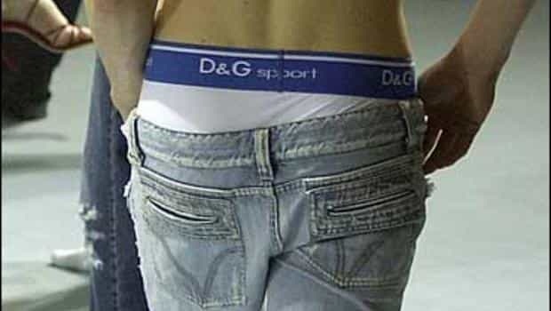
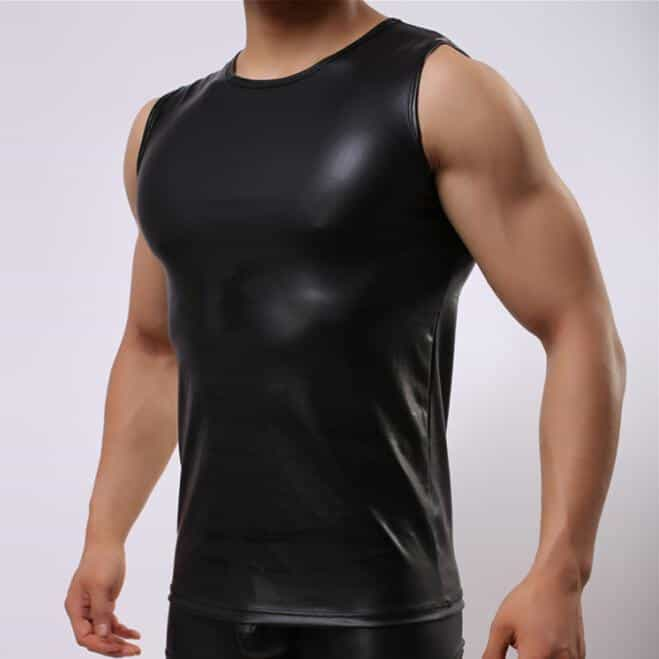
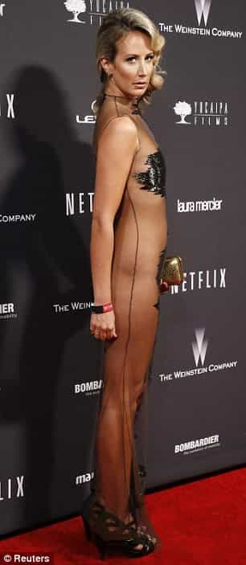

< < < Back
If You Dress Like An Attention Whore At Work, Expect To Be Treated Like One – Return Of Kings
A favorite trope of feminists and women claiming workplace discrimination is that female staff are the victims of “sexism” due to judgments about their appearance. But how many times have we all seen girls working in our building or out on their lunch breaks in attire more befitting of a Tinder date, raunchy nightclub, strip joint, or even the gym? Meanwhile, men must keep their fashion within a very narrow range of acceptability, otherwise they risk failing to get that fancy new job or could lose their current one.
Furthermore, guys learn to deal with the fact that the world does judge you based on your appearance. Many women have zero idea about this concept, only accepting the judgments they agree with or those ones that further their interests and career. For those opinions they don’t like, they can always conveniently claim the person giving them is sexist or misogynist, or, just as amorphously, “objectifying” a woman. This is classic attention-seeking.

Attention-whore Jayde Phoenix.
The epitome of this growing female narcissism is a British woman by the name of Jayde Phoenix. Touting herself as a “IT security expert” (despite her academic and job credentials being a fraction of what it means to be highly qualified or plain non-existent), she suggested a “guess the number of USBs in a jar” competition to promote her company. With her breasts nearly spilling out of a see-through top, she looked at the camera with a lustful gaze, what many on the Roosh V Forum would call “a thousand cock stare.” Her clothes (and demeanor) better suited a street hooker than a “professional.”
As we should have expected in our troubled times, the many critics of Phoenix’s contrived appearance were labeled as “sexists,” “bullies,” and “misogynists.” She herself tried to excoriate her detractors, emphasizing how “good” she was at her job and the professional standards she supposedly meets every day. But there are a few questions both the original photo exercise and her subsequent justifications failed to answer, namely:
- If she’s so good at her job, why did she need to use a see-through bra in the picture?
- Why doesn’t she wear a top size that comfortably contains her breasts, rather than flaunting them?
- Why is she and not someone else in the photo?
Though the attention-seeking of Jayde and her employer first flared up several months ago, the dilemma of girls like her is an ongoing one.
Try getting employed in an office as a man with this sort of attire
Baggy pants with your underwear showing

The male office worker could be wearing black pants and not jeans, like in the photo, and sporting a typical business shirt. That doesn’t matter. No white collar company worth a dime is going to hire a man whose boxers or briefs are showing down to his ass. Compare this to the parade of female office workers who go beyond showing their arms and the hint of a bra strap to exhibiting half the surface area of their breasts. In addition, if you haven’t already noticed, the very short crop top is now a staple garment within American office (un)culture. It is not unusual to see a large part of a woman’s bare stomach and back, including over-the-top tattoos.
Hawaiian shirts and board shorts
Some workplaces, most notably those trying to appear “hip,” have drastically relaxed the need for business attire. But these employers are definitely in the minority. A man with a penchant for Hawaiian shirts, board shirts or other beach clothing will find his career options drastically limited. As they should be! The way in which you relate to your friends or fellow tourists on a holiday is almost always far different from how you should deal with clients, investors, stakeholders and the like in your profession. Men save their best (or worst) Hawaiian shirt for office charity fundraising days, company summer parties and related functions, not an average day.
Leather, lycra or ridiculously tight clothing in general

Inasmuch as tight clothing on men doesn’t tickle your or my fancy, it’s how ironic how an obese woman can wear garments twice or thrice as close-fitting in the workplace than a fit male. And, male office workers of the world, don’t even consider wearing leather pants during your next boardroom presentation. The occasional gay man or metrosexual might escape sanction for some outlandish or garish outfit, but most industries, if they value their reputation with clients, will prohibit you from donning clothing that looks like it came from the wardrobe of Lance Armstrong or someone from Queer Eye for the Straight Guy.
Excuses for female attention-seeking are out of control

It seems that “Lady” Victoria Hervey and Jayde Phoenix read the same book.
There is little doubt that Jayde Phoenix’s employer expected a backlash against her. In this sense, it was a very good marketing and advertising ploy (for those prospective clients who do not care about actual professionalism, of which there are many). As for Phoenix and other women like her, this situation is win-win. At the very least, she and those of her ilk can continue their day-to-day objectification of themselves, generating desperately craved male attention in particular. Even for girls who do not receive the public’s spotlight, any roadblock or mishap in their career can later be blamed on “misogyny” after judgments about their appearance.
At best, as happened in Phoenix’s situation, she gets nation-wide and even global coverage. For narcissistic girls who take zero responsibility for how others may negatively perceive them, this is the coup of a lifetime. Yet as they age (and Jayde Phoenix looks far older than her early 20s), expect their antics to become more straw-clutching. And while these girls engage in sexual self-advancement and wage war over imaginary discriminations, the vast majority of male employees have no scapegoat they can use to rationalize their failures and virtually no means of combating institutionalized prejudice against their so-called “privilege.”
By the way, is Jayde Phoenix’s Arabic necklace indicative of some “work” she may have done in Dubai?
Read More: 6 Types Of Photos Girls Use To Attention Whore On Tinder